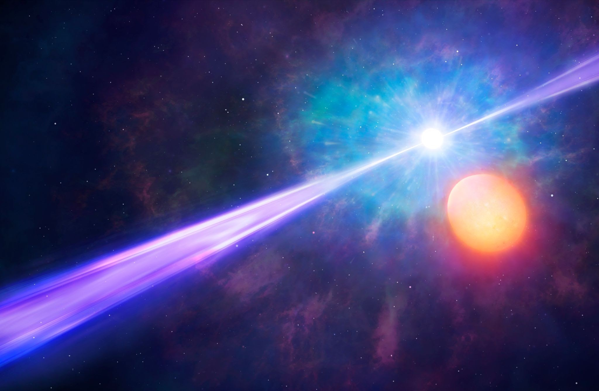
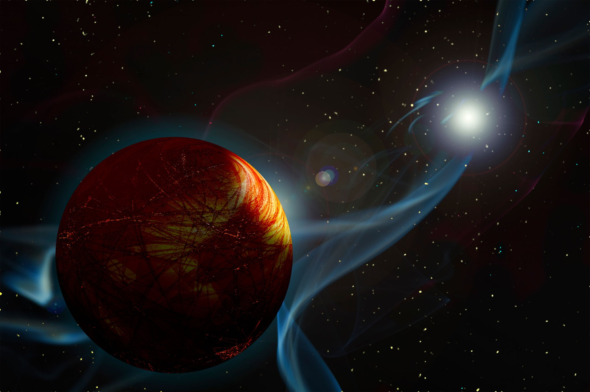
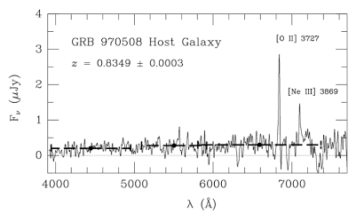
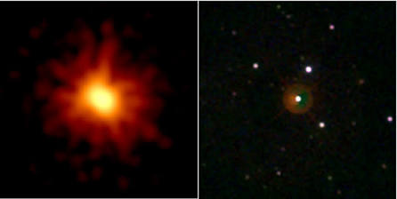
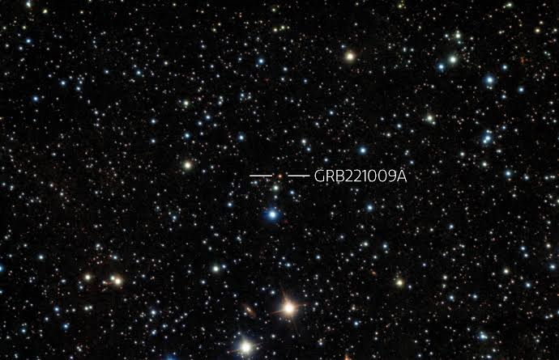

Para comprender la escala de destrucción inimaginable que representan los estallidos de rayos gamma, conocidos científicamente como GRBs por sus siglas en inglés, es fundamental definir primero qué son estos fenómenos y por qué se consideran las explosiones electromagnéticas más potentes, luminosas y violentas de todo el universo desde el instante mismo del Big Bang. Un estallido de rayos gamma es un destello repentino y colosal de radiación electromagnética de alta energía que se origina en las regiones más distantes del cosmos observable, liberando en un lapso que va desde unos cuantos milisegundos hasta varios minutos una cantidad de energía equivalente a la que el Sol emitirá de manera conjunta a lo largo de toda su vida útil estimada en diez mil millones de años. Estos eventos cataclísmicos se dividen principalmente en dos grandes categorías según su duración temporal y su origen físico: los estallidos cortos, que duran menos de dos segundos y se producen durante la violenta fusión de dos estrellas de neutrones en un sistema binario compacto o la colisión entre una estrella de neutrones y un agujero negro; y los estallidos largos, que superan los dos segundos y están estrechamente vinculados con el colapso gravitacional de estrellas hipermasivas en rotación rápida, conocidas como hipernovas, donde el núcleo estelar se desploma directamente para formar un agujero negro mientras expulsa chorros relativistas de plasma a velocidades que alcanzan el noventa y nueve coma nueve por ciento de la velocidad de la luz.

A partir de esta definición, el peligro absoluto que suponen los estallidos de rayos gamma para la vida y la estabilidad de los sistemas planetarios radica en la direccionalidad extrema de sus chorros de plasma relativista. Cuando el material es expulsado a través de los polos magnéticos del objeto colapsado, la radiación gamma y los rayos X de alta energía se concentran en haces sumamente estrechos y focalizados, actuando como un soplete cósmico capaz de atravesar galaxias enteras sin perder su poder destructivo. Si un estallido de rayos gamma de larga duración ocurriera dentro de nuestra propia galaxia y la Tierra se encontrara desafortunadamente alineada en la trayectoria directa de su haz relativista, las consecuencias para la biosfera serían catastróficas e inapelables en cuestión de horas. La llegada masiva de fotones de alta energía ionizaría de forma irreversible las moléculas de nitrógeno y oxígeno en la atmósfera superior terrestre, desencadenando una reacción química que destruiría por completo la capa de ozono protectora, transformaría el nitrógeno en dióxido de nitrógeno y sumiría al planeta en una densa bruma tóxica que bloquearía la luz solar, exponiendo simultáneamente la superficie a niveles letales de radiación ultravioleta cósmica y desencadenando una extinción massiva global que borraría toda la vida pluricelular en pocas semanas.

Entre los hitos fundamentales en la historia de la astrofísica observacional moderna que permitieron desentrañar la verdadera naturaleza de estos eventos destaca el GRB 970508, registrado el ocho de mayo de mil novecientos noventa y siete, el cual marcó un punto de inflexión absoluto en la astronomía al ser el primero estallido de rayos gamma en el que se logró determinar con precisión su distancia extragaláctica mediante la medición de su corrimiento al rojo o redshift en el espectro visible, demostrando de una vez por todas que estos fenómenos no ocurrían en los confines cercanos de la Vía Láctea, sino en las profundidades del universo distante. Este descubrimiento confirmó que los GRBs eran los cataclismos más energéticos conocidos, abriendo una ventana sin precedentes hacia el estudio de la física de altas energías y la relatividad general aplicada a la muerte estelar masiva.

Otro evento histórico extraordinario que cautivó a la comunidad científica internacional ocurrió el diecinueve de marzo de dos mil ocho, cuando el satélite Swift de la NASA registró el denominado GRB 080319B, conocido popularmente como el estallido a simple vista. Este evento liberó una cantidad de energía tan monumental que, a pesar de haberse originado a una distancia de aproximadamente siete mil quinientos millones de años luz de la Tierra, es decir, a medio camino del universo observable, su destello óptico transitorio alcanzó una magnitud aparente tal que habría sido perfectamente visible a simple vista durante unos treinta segundos para cualquier observador nocturno que mirara hacia la constelación de Bootes, convirtiéndose en el objeto más lejano jamás visto por el ojo humano sin la ayuda de telescopios y evidenciando la potencia desmesurada de estos chorros relativistas.

El pináculo reciente de la observación de estos monstruos cósmicos se alcanzó el nueve de octubre de dos mil veintidós con la detección del GRB 221009A, bautizado formalmente por los astrofísicos como el BOAT, acrónimo en inglés de el brillo más brillante de todos los tiempos. Este estallido excepcional se originó a una distancia relativamente cercana, en términos cosmológicos, de unos dos mil cuatrocientos millones de años luz, y su llegada a la Tierra provocó una perturbación masiva e inmediata en la ionosfera superior de nuestro planeta, alterando las señales de radio y siendo registrado por múltiples observatorios espaciales y terrestres como el evento electromagnético más intenso jamás registrado en la historia de la ciencia moderna. La radiación de este estallido ionizó temporalmente capas de la atmósfera terrestre de una manera que normalmente solo producen erupciones solares extremas a corta distancia, demostrando que incluso a miles de millones de años luz de distancia, los estallidos de rayos gamma ejercen una influencia notable sobre el entorno electromagnético del sistema solar y recuerdan la fragilidad de nuestro delicado equilibrio planetario frente a la furia de los procesos más extremos del cosmos.
